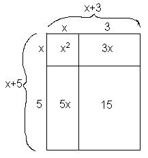
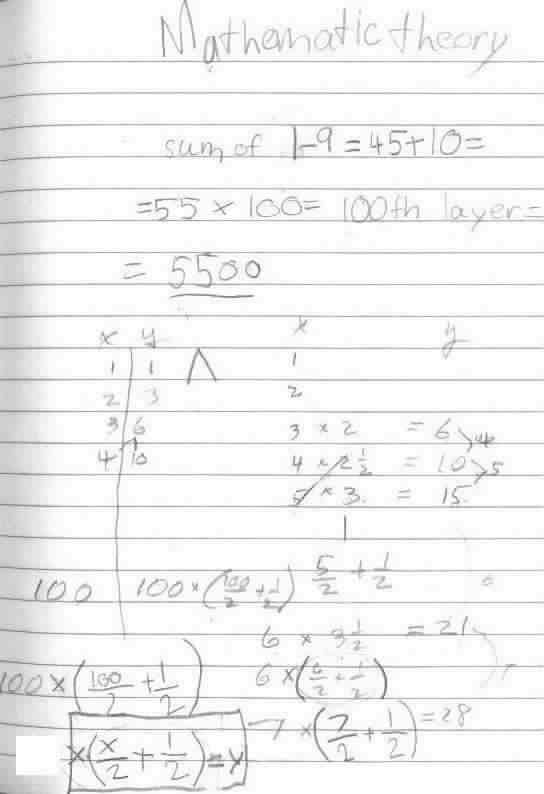
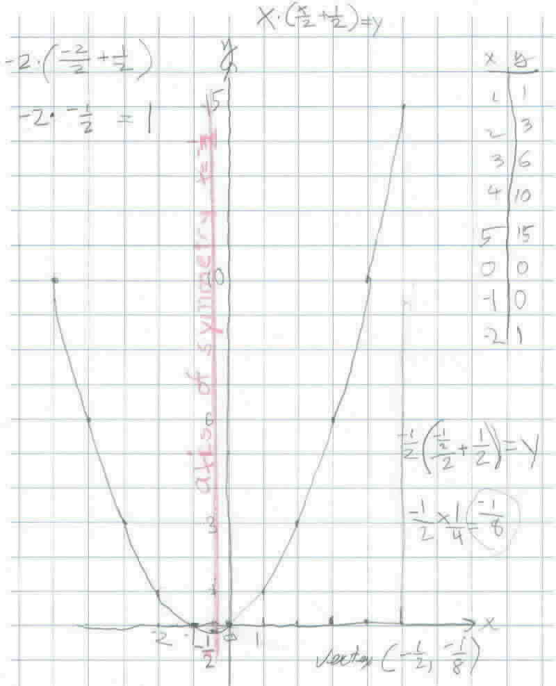
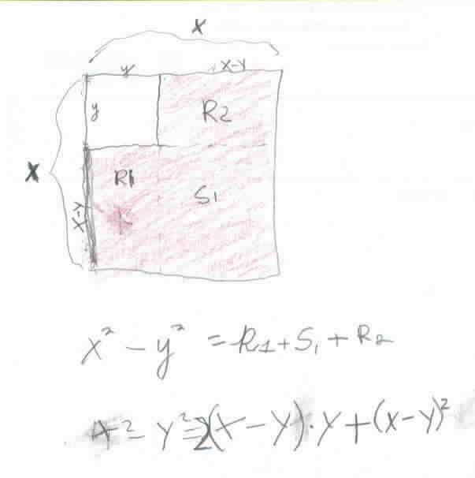
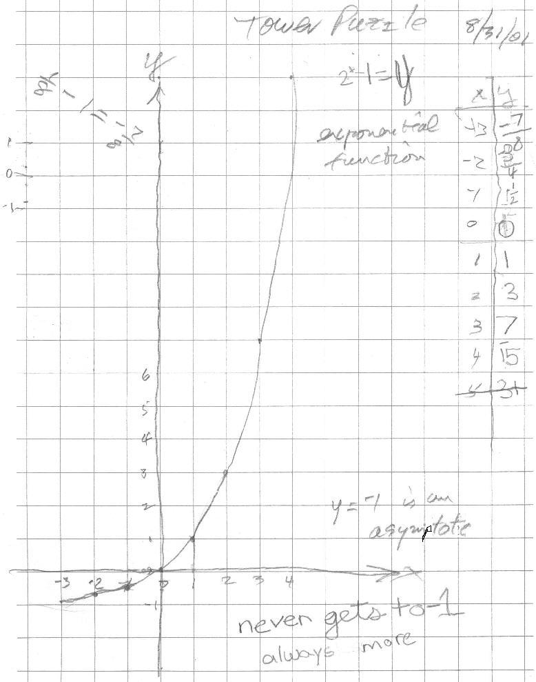

Natalie returns at age 8, to work with Don
8/29/01 Natalie worked on multiplying binomials and factoring.Don used the area a rectangle model to find 3*(2+5) = 3*2 + 3*5 = 6+15=21. This is the distributive property 3*(2+5) = 3*2 + 3*5 or a (b + c) = ab + ac. Then to multiply (x + 3)*(x+5) Don again drew a rectangle:

Natalie found the area to be x2 + 3x + 5x + 3x5 = x2 + 8x + 15, so
(x + 3)*(x+5) = x2 + 8x + 15
Don asked Natalie to look where the 8x and 15 come from. And she did these: 4(y-3)= 4y-12
(x+3)(x+4)= x2 + 7x + 12
(4x + 3)2 = (she first wanted to say 16x2
+ 9), but she drew the rectangle or square, in this case, and got 16x2
+ 24x + 9. She also found
(a + b)2 = a2
+ 2ab + b2
At this point Don showed Natalie that multiplying is the opposite of factoring. This is multiplying (x+3)(x+4) to get x2 + 7x + 12. And if you factor x2 + 7x + 12, you get (x+3)(x+4). She did both multiplying and factoring, like
multiply (x-3)(x+7) =
= x2 + 5x + 6 factor
multiply (2x-5)(3x-7)=
= 6x2 - 11x - 35 factor
Natalie also used the rectangle to multiply (x+2)(3x2 + 5x - 1). She ended with (x+2)(3x2 + 5x - 1) = 3x3 + 11x2 + 9x -2.
8/30/01 Natalie found a pyramid made from cubes and Don asked if she would find the number of cubes in each layer: 1, 3, 6, 10, 15 . Don asked if she could find the number of cubes in the 100th layer. Natalie thought about this, saw a pattern in the table below, 2+1=3, 3+3=6,... (her triangle theory). Then she said she knew the sum of the numbers from 1-9 = 45, then she wrote her theory to get the sum of the numbers from 1 to 100:

Don wrote down what she talked about above, until she saw the pattern and wrote the rule, x(x/2 + 1/2) = y. She realized then, that her prediction of 5500 was wrong and should be 5050 for the sum of the first100 numbers.
Natalie wrote "I graphed the rule x(x/2 + 1/2) = y ." She plotted the points (1,1), (2,3), (3, 6), (4, 10) and (5, 15). Then Don asked Natalie to put in 0, -1, and -2 in for x to get the y-values and plot more points. There was a lot of arithmetic and negative number work to do here!

She found (0, 0), (-1, 0) and (-2, 1) were other points on the graph. Don asked Natalie where the axis of symmetry was. She pointed to the point ( -1/2, 0) and Don told her the mirror would go along the line which she drew in red, and Don told her the equation of that line was x = -1/2. Then Don asked her where the lowest point (the vertex) was. The x-coordinate was -1/2, so Don suggested she put that in for x and find y in the rule. See her work on the right bottom on the graph paper. The vertex (low point in this case) of the parabola is ( -1/2, -1/8).
Don asked Natalie to find another name for x2 - y2

8/31/01 Natalie had worked on the tower puzzle during the
school year and now was ready to do the math from it. She started with 1 disk,
then 2 disks, and found the minimum number of moves to move the pile. After some
discussion on another piece of paper, Natalie saw that the 7 = 23
- 1 and 15 = 24
- 1, so the rule was 2x
- 1= y. Don made sure she could work with negative exponents. The
pattern tells the story:
24 = 16
23 = 8
22 = 4
21 = 2
What's happening to the answer as the exponent goes down 1? Natalie said
"You divide by 2". So
20 = 1
2-1 = 1/2 and
2-2 = 1/4 = 1/22
and
2-3 = 1/8 = 1/23

After Natalie had graphed from x = 0 to 4, she thought the graph would be a parabola. Then she put negative numbers in for x, and again did a lot of arithmetic of signed numbers and negative exponents. She realized the curve "never gets to -1 always more". Don gave her the word asymptote (misspelled on the graph, and corrected), as the line it approaches, but never reaches.
Fine job Natalie!